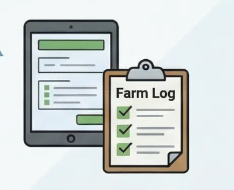
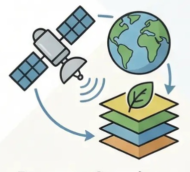

Trong bối cảnh các thị trường xuất khẩu ngày càng ưu tiên tiêu chí bền vững, dấu chân carbon (carbon footprint) đang trở thành yêu cầu quan trọng đối với ngành cà phê Việt Nam. Việc đo lường và minh bạch phát thải không chỉ giúp doanh nghiệp tuân thủ quy định, mà còn nâng cao giá trị sản phẩm và khả năng tiếp cận các thị trường cao cấp như EU, Mỹ, Nhật Bản.
Giải pháp của GDTS được phát triển bởi đại diện được lựa chọn vào chương trình LIF Global 2026 của Royal Academy of Engineering (UK), khẳng định tiềm năng ứng dụng và thương mại hóa trên quy mô quốc tế.

Dấu chân carbon là gì? Vì sao ngành cà phê Việt Nam cần quan tâm?
Dấu chân carbon (carbon footprint) là chỉ số đo lường tổng lượng khí nhà kính phát thải trong suốt vòng đời của một sản phẩm – từ sản xuất, chế biến đến vận chuyển và tiêu thụ.
Đối với ngành cà phê Việt Nam, đây không còn là khái niệm xa vời. Các thị trường lớn như châu Âu và Bắc Mỹ ngày càng ưu tiên sản phẩm có thông tin minh bạch về môi trường, đặc biệt trong bối cảnh các chính sách như CBAM (Cơ chế điều chỉnh biên giới carbon) và tiêu chuẩn ESG được áp dụng rộng rãi.
Phần lớn phát thải trong chuỗi cà phê đến từ hoạt động canh tác (phân bón, nước tưới), chế biến và logistics. Tuy nhiên, việc đo lường các yếu tố này đòi hỏi dữ liệu chuẩn hóa và công cụ chuyên biệt – điều mà nhiều doanh nghiệp hiện chưa có.
Xây dựng hệ thống đo lường và gán nhãn carbon cho cà phê xuất khẩu không chỉ giúp đáp ứng yêu cầu thị trường mà còn mở ra cơ hội tham gia chuỗi cung ứng bền vững, nơi giá trị sản phẩm được định vị cao hơn.
Thách thức khi triển khai nhãn carbon cho cà phê xuất khẩu
Mặc dù nhu cầu về nhãn carbon cho cà phê xuất khẩu ngày càng tăng, việc triển khai trong thực tế vẫn gặp nhiều rào cản:
- Thiếu dữ liệu đầu vào: Phần lớn vùng nguyên liệu chưa được số hóa; thông tin canh tác còn rời rạc, khiến việc thu thập dữ liệu phát thải tốn kém và thiếu chính xác.
- Khó khăn trong tính toán carbon footprint: Các phương pháp quốc tế như IPCC hay ISO yêu cầu quy trình chuẩn hóa và chuyên môn cao, vượt ngoài khả năng của nhiều doanh nghiệp vừa và nhỏ.
- Thiếu hệ thống truy xuất nguồn gốc minh bạch: Không có công cụ phù hợp, dữ liệu phát thải sẽ khó được đối tác quốc tế chấp nhận.
- Chi phí tư vấn và chứng nhận cao: Khiến việc triển khai trên diện rộng khó khả thi với doanh nghiệp vừa và nhỏ.

Giải pháp gán nhãn carbon của GDTS
Giải pháp của GDTS tập trung vào tích hợp dữ liệu và minh bạch hóa, giúp đơn giản hóa toàn bộ quy trình từ thu thập đến chứng nhận. Hệ thống gồm 4 module cốt lõi:
1. Số hóa vùng nguyên liệu (GIS)
- Bản đồ hóa từng nông hộ và lô sản xuất trên nền tảng GIS
- Thu thập dữ liệu canh tác: phân bón, nước tưới, năng lượng sử dụng
- Chuẩn hóa dữ liệu đầu vào cho tính toán phát thải chính xác
2. Tính toán dấu chân carbon (Carbon Footprint)
- Áp dụng phương pháp quốc tế: IPCC, ISO 14064, ISO 14067
- Tự động hóa quy trình tính toán, giảm sai số thủ công
- Kết quả chuẩn hóa theo từng lô sản phẩm, sẵn sàng cho audit
3. Truy xuất nguồn gốc & Mã QR
- Mỗi lô cà phê được gán mã QR riêng biệt
- Hiển thị đầy đủ thông tin sản xuất, quy trình canh tác và mức phát thải
- Tăng độ tin cậy và minh bạch với đối tác, nhà nhập khẩu quốc tế
4. Hỗ trợ chứng nhận & mở rộng tín chỉ carbon
- Chuẩn bị dữ liệu đầy đủ cho quy trình audit và chứng nhận
- Đồng bộ với yêu cầu ESG, CBAM và các tiêu chuẩn thị trường quốc tế
- Sẵn sàng mở rộng sang giao dịch tín chỉ carbon trong tương lai

Giá trị mang lại cho doanh nghiệp và chuỗi cung ứng
Ngành cà phê toàn cầu đang chuyển dịch mạnh mẽ theo hướng minh bạch và bền vững. Truy xuất nguồn gốc và nhãn carbon đang trở thành hai yếu tố song hành không thể thiếu, đặc biệt tại các thị trường cao cấp.
- Doanh nghiệp: Nâng cao năng lực cạnh tranh, xây dựng thương hiệu bền vững và đáp ứng tiêu chuẩn carbon quốc tế. Sản phẩm có nhãn carbon dễ tiếp cận phân khúc cao cấp và gia tăng giá trị thương mại.
- Người nông dân: Cải thiện quy trình sản xuất dựa trên dữ liệu, tiết kiệm chi phí đầu vào và nâng cao thu nhập.
- Chuỗi cung ứng: Toàn bộ chuỗi trở nên minh bạch, hiệu quả và được đối tác quốc tế tin tưởng hơn.
Những doanh nghiệp đi trước trong minh bạch hóa dữ liệu carbon sẽ chiếm lợi thế bền vững trong chuỗi giá trị toàn cầu.
Vì sao doanh nghiệp cà phê cần nhãn carbon ngay hôm nay?
- Thị trường quốc tế (EU, Mỹ, Nhật) yêu cầu minh bạch phát thải theo tiêu chuẩn ESG, CBAM
- Đối tác ưu tiên nhà cung cấp có dữ liệu môi trường rõ ràng và có thể kiểm chứng
- Sản phẩm có nhãn carbon gia tăng giá trị và dễ tiếp cận phân khúc cao cấp
- Doanh nghiệp đi trước sẽ chiếm lợi thế trong chuỗi cung ứng bền vững
GDTS hướng tới việc đồng hành cùng ngành cà phê Việt Nam chuyển dịch theo hướng xanh – minh bạch – bền vững, sẵn sàng đáp ứng các yêu cầu ngày càng cao của thị trường toàn cầu.
Để được tư vấn và tìm hiểu thêm về giải pháp gán nhãn carbon cho cà phê, xin vui lòng liên hệ với chúng tôi.